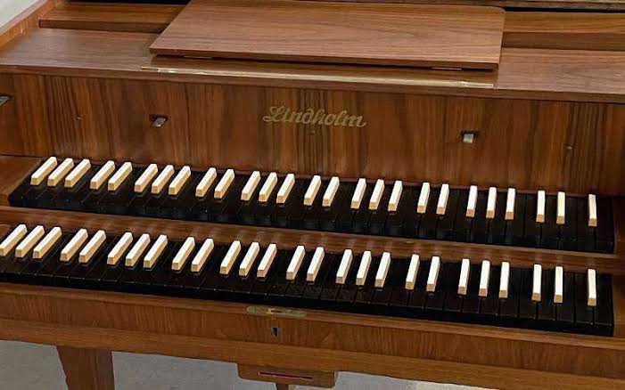
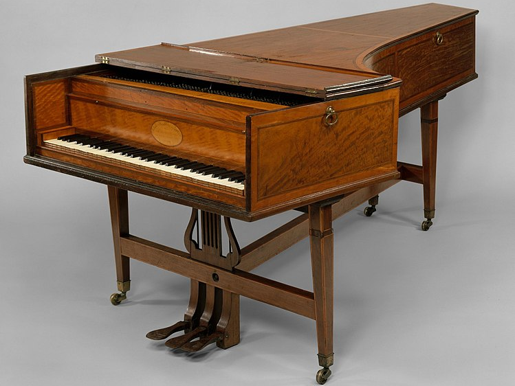
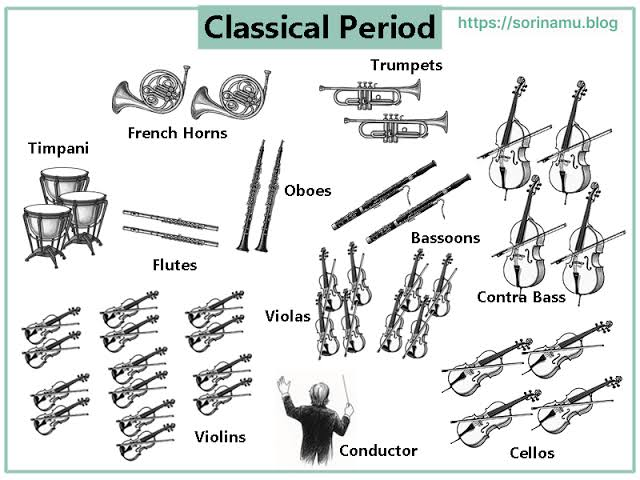

El Clasicismo es una época de gran desarrollo de la música instrumental. El nuevo estilo compositivo que surge hará que caigan en desuso algunos instrumentos del Barroco, mientras que otros se perfeccionarán, y surgirán también algunos nuevos.
El piano
En el periodo del Clasicismo hace su aparición el que a partir de ese momento será el rey de los instrumentos de teclado: el piano. El clavecín fue sustituido por un instrumento al que se llamó pianoforte, cuya gran aportación fue la posibilidad de producir notas a distinto volumen en función de la intensidad con la que se presionara una tecla, a diferencia del clavecín, que no ofrecía esa posibilidad. El primer piano fue fabricado entre 1695 y 1700 por el italiano Bartolomeo Cristofori con el nombre de gravicèmbalo col piano e forte (clavecín con sonidos suaves y fuertes). Dos grandes compositores de este periodo, Mozart y Beethoven, escribirán importantes conciertos para este nuevo instrumento.
 |
 |
La orquesta en el Clasicismo
En el Clasicismo deja de utilizarse la técnica del bajo continuo y, en consecuencia, también el clave o clavecín que, como vimos, se usaba como apoyo armónico para esta técnica. A esto contribuye también la aparición del piano. Otros instrumentos, como el órgano, la flauta de pico y el laúd, también dejan de utilizarse en la orquesta. En la familia de viento hace su aparición el clarinete, y las flautas traveseras y las trompas también adquieren gran protagonismo. La plantilla orquestal aumenta y se sitúa entre 30 y 50 músicos. Comienza a imponerse la figura del director dirigiendo desde el atril (y no sentado desde el clave, como en el Barroco).
